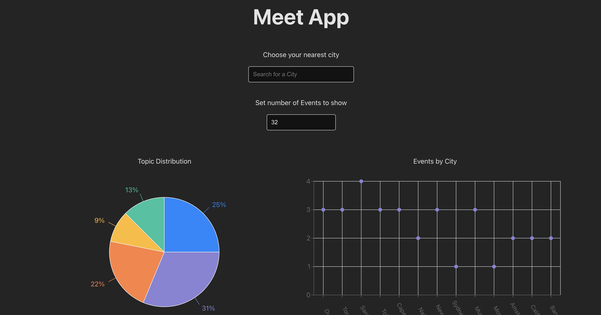

Meet App
The Meet App is a modern web application designed to help users discover and explore events in different cities. By leveraging the power of serverless architecture and Progressive Web Apps (PWAs), the Meet App delivers a seamless, fast, and cross-platform experience.
Project Objective
The goal of the Meet App is to make event discovery simple and accessible anytime, anywhere. Built with a Test-Driven Development (TDD) approach, the app offers features like:
- Search for events by city
- View event details & manage how many events are displayed
- Offline functionality - access cached events without an internet connection
- Add the app to your home screen for quick access
- Interactive charts to visualize event trends by city & category
Technology Used
The Meet App is lightweight, easy to use, and works across devices, making event discovery more convenient than ever. To ensure smooth performance and reliability, the Meet App is built using:
- React - A fast, responsive front-end framework
- AWS Lambda - A serverless backend for handling data requests
- Google Calendar API - Fetching real-time event data
- Jest & Cucumber - Ensuring quality through rigorous testing
- OAuth2 - Secure authentication
- Recharts - For data visualizations
- Service Workers - Enabling offline access
- Vercel - For deployment